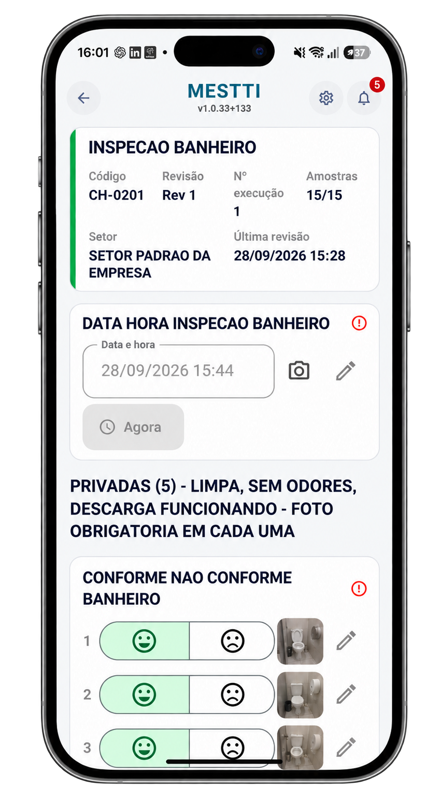
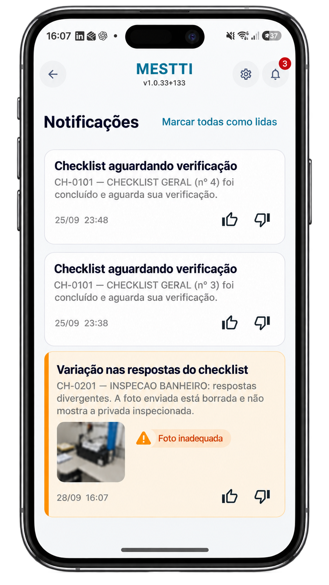
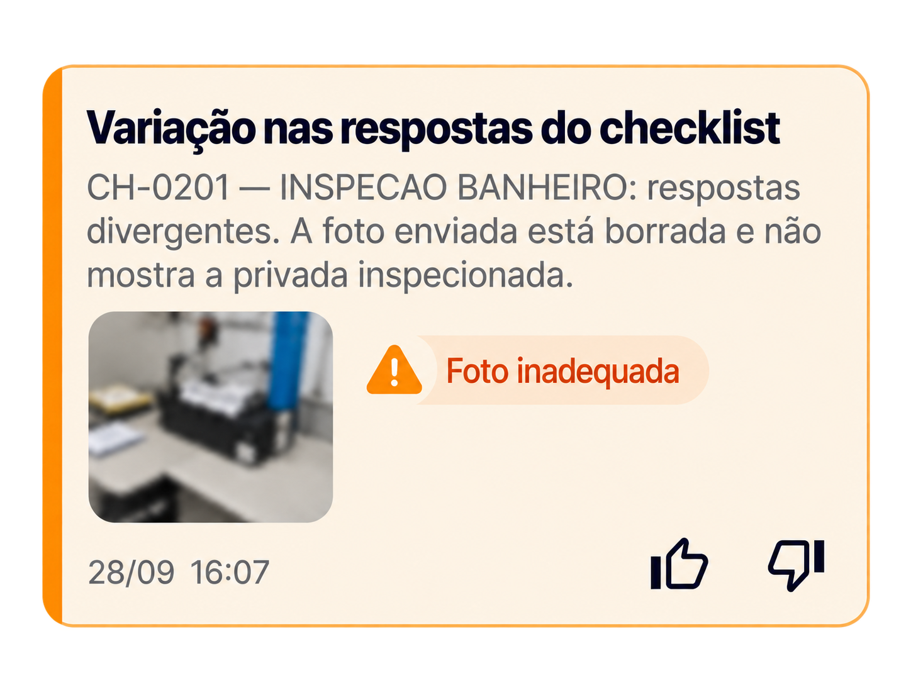
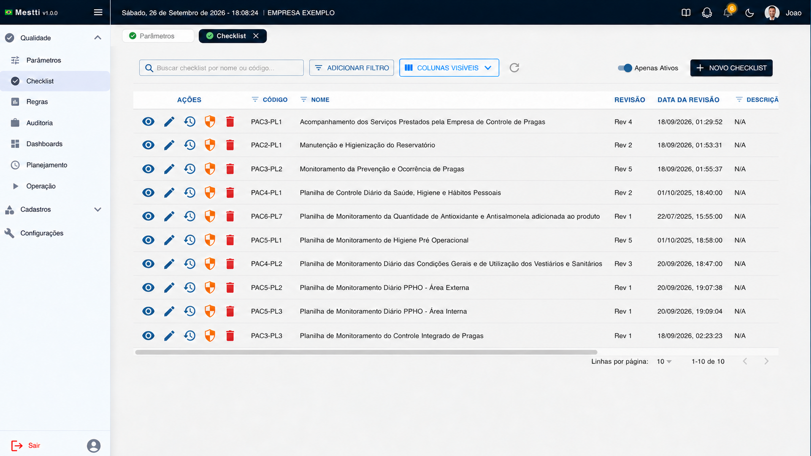
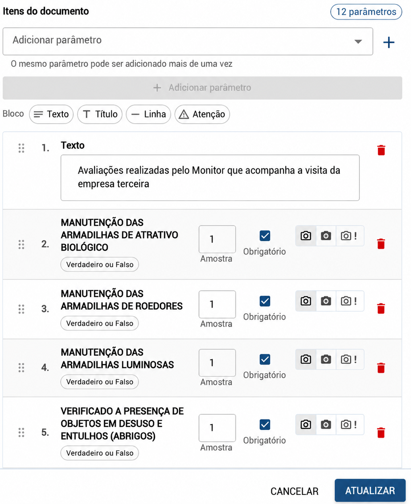
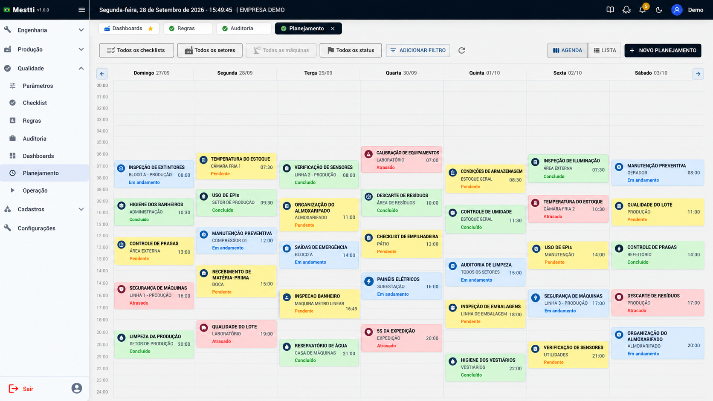
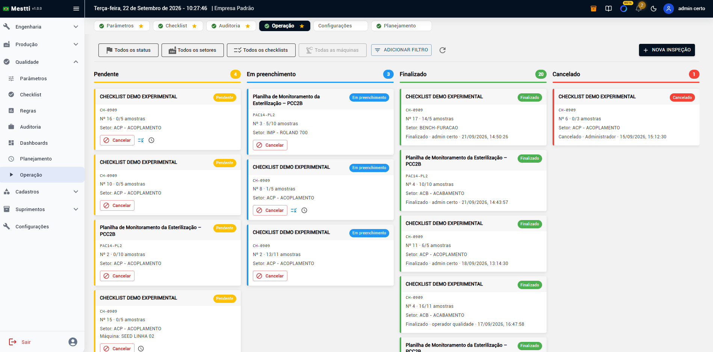
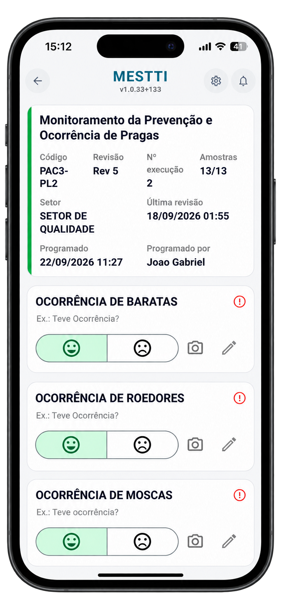
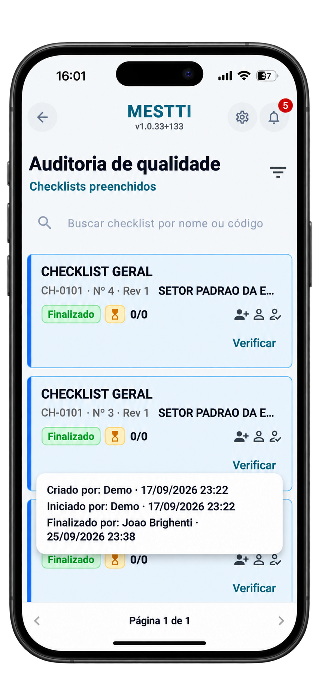
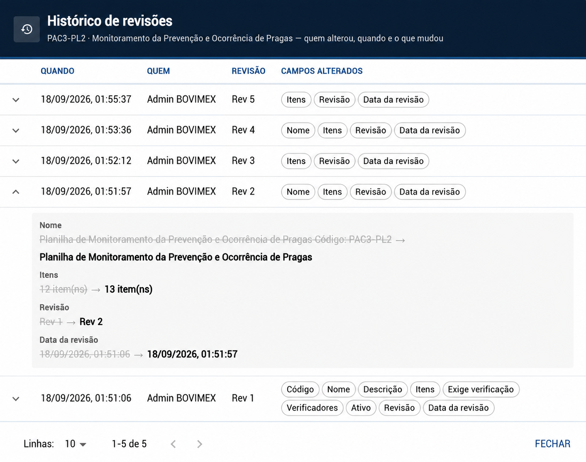

Inspeção de recebimento
Padronize a conferência de matérias-primas e materiais recebidos.
Qualidade Mestti
Inspeções e checklists no chão de fábrica.



01 · Estruture
Leve para a Mestti os controles que hoje estão em papel, planilhas ou formulários separados.
Crie checklists para cada processo, organize os pontos que precisam ser verificados e mantenha o padrão de inspeção disponível para toda a operação.
Cada checklist concentra o que precisa ser conferido, no mesmo lugar, para quem executa e para quem acompanha.
O checklist pode evoluir conforme o processo muda, sem apagar as inspeções feitas nas revisões anteriores.
Do padrão da qualidade para a rotina da fábrica.


02 · Planejamento
A Mestti monta a agenda do que precisa ser verificado, no dia e no horário definidos.
Toda regra de inspeção da empresa é criada e gerenciada pelo sistema.
Checklist, setor, máquina e horário ficam organizados em um só planejamento.
Cada regra define quando o checklist abre e permanece sob a gestão da equipe.
Planejamento e regra de inspeção no mesmo lugar.

03 · Execute
No chão de fábrica, o operador acessa as inspeções disponíveis e realiza o preenchimento pelo celular, tablet ou computador.
Durante a execução, é possível registrar valores, classificar o resultado da verificação e adicionar observações sobre o que foi encontrado.
O operador encontra o checklist, inicia a inspeção e responde somente o que precisa ser verificado.
O preenchimento pode ser salvo e retomado sem perder o trabalho realizado.


04 · Acompanhe
Acompanhe as inspeções realizadas e encontre rapidamente o que precisa ser analisado.
Consulte execuções por checklist, setor, máquina, responsável, revisão e status.
Veja o que está em andamento, o que já foi concluído e os registros que exigem atenção.
A gestão passa a ter uma visão centralizada das inspeções realizadas pela operação.

05 · Rastreie
Quem realizou, quando realizou, qual checklist foi utilizado, qual revisão estava vigente, onde a inspeção aconteceu, quais valores foram registrados, qual foi o resultado e quais observações foram feitas.
A informação permanece associada à execução para consultas futuras.
Mais rastreabilidade para auditorias, investigação de problemas e melhoria contínua.

Onde usar?
Padronize a conferência de matérias-primas e materiais recebidos.
Realize verificações durante as diferentes etapas da operação.
Confirme os pontos necessários antes do início da operação.
Registre critérios e resultados antes da liberação do produto.
Digitalize verificações periódicas realizadas pela equipe da qualidade.
Crie rotinas de inspeção para áreas, máquinas e setores.
Padronize verificações e mantenha o histórico das execuções.
Do papel para um processo rastreável
Você não precisa reinventar seu sistema de qualidade para começar. Pegamos o checklist que hoje existe no papel, na planilha ou em outro formulário e transformamos a rotina em um processo digital dentro da Mestti.
Transforme os controles atuais em checklists dentro da plataforma.
Disponibilize as inspeções para quem realmente realiza a atividade.
Centralize as execuções e os resultados da operação.
Use o histórico para identificar desvios e evoluir o processo.
Qualidade mais perto da operação
Saia do papel e tenha um histórico organizado sobre como, onde e quando cada inspeção foi realizada.
Mestti. Transformando dados da fábrica em decisões.
Sem compromisso. Começamos pelo processo que você já possui.